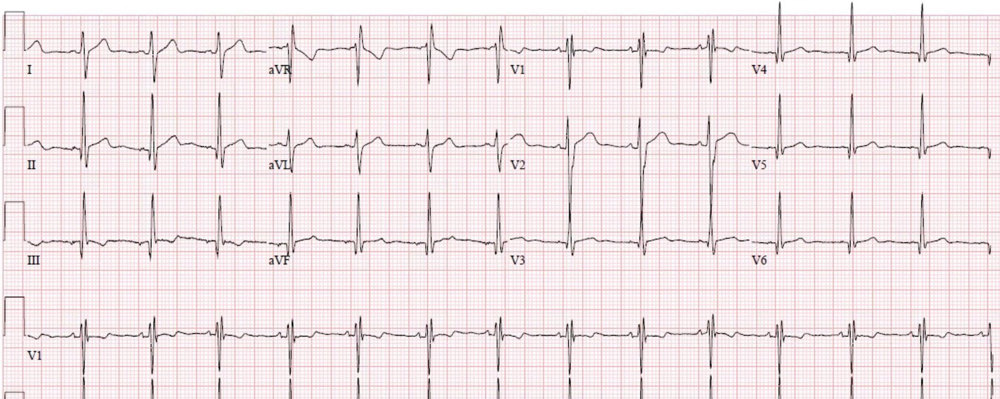
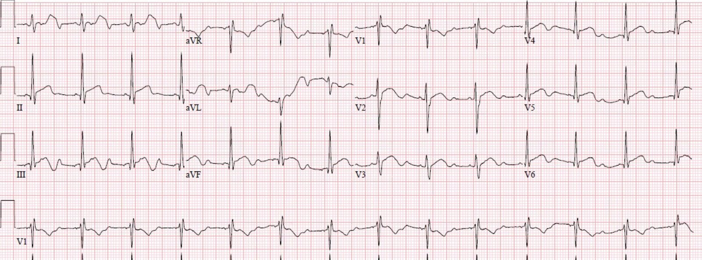
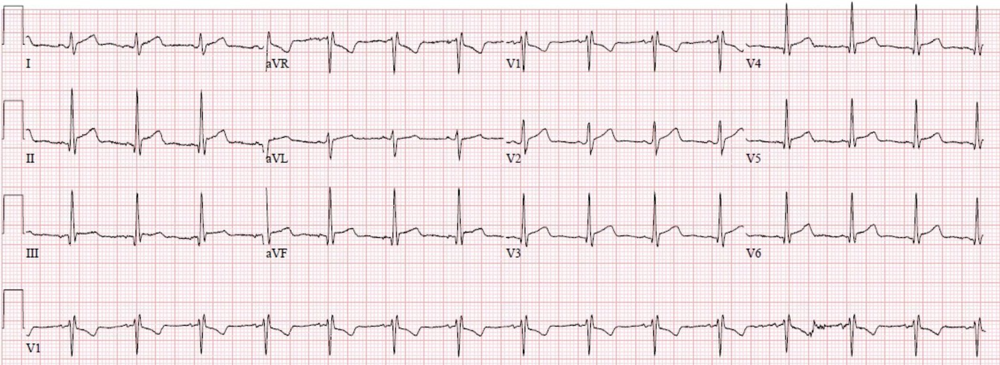
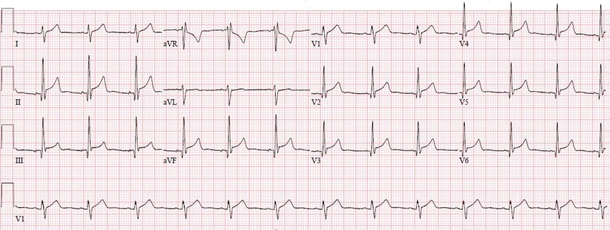
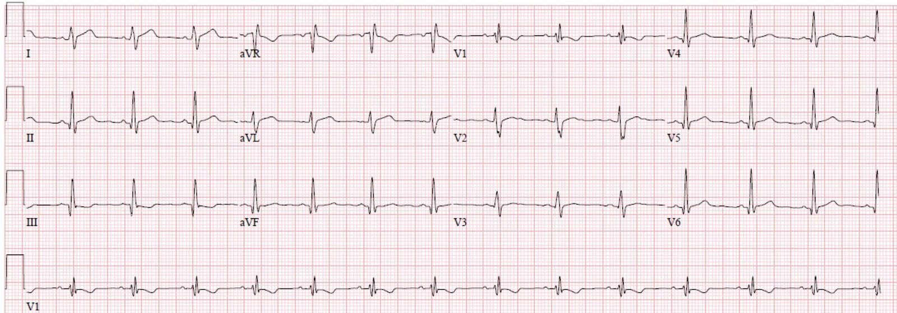
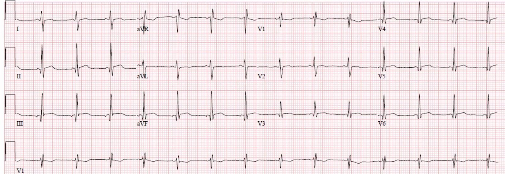
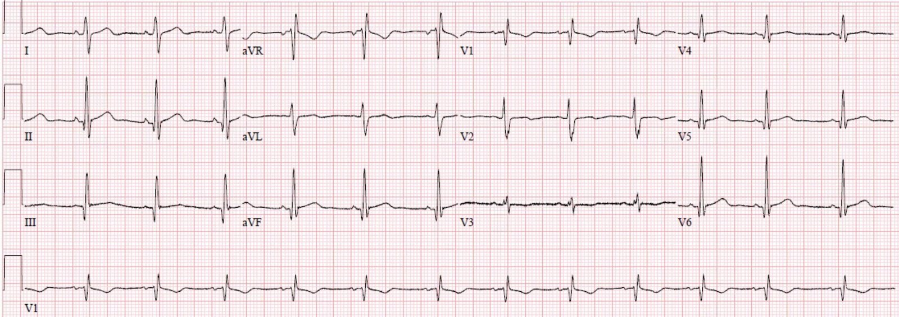
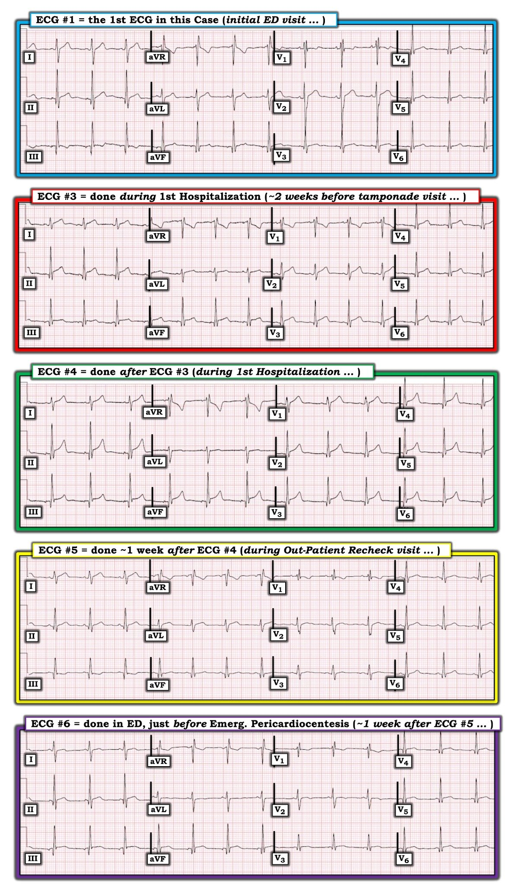

12/07/2020 — Một phụ nữ trẻ ngoài 20 tuổi bị ngất
Bản dịch tiếng Việt của bài "A young woman in her early 20s with syncope" – Dr. Smith’s ECG Blog. Giữ nguyên toàn bộ 10 hình ảnh và 3 video của bản gốc.
Người viết: Pendell Meyers
Một phụ nữ 20 tuổi có một cơn ngất được phân loại vào khu bệnh nhẹ của tôi vào một buổi sáng. Các dấu hiệu sinh tồn trong giới hạn bình thường, trừ tần số tim 109 lần/phút.
Tôi lập tức đến đánh giá cô ấy mà không xem hồ sơ trước. Tôi gặp một cô gái trẻ trông khỏe mạnh trong phòng cùng bố mẹ, những người đã chứng kiến sự việc. Cô kể rằng mình đang ngồi trên một gờ nông trong hồ bơi thì thấy choáng váng, nên đã đứng dậy ra khỏi hồ rồi ngất thoáng qua cạnh hồ bơi trước mặt bố mẹ; bố mẹ kịp đỡ nên cô không bị chấn thương gì. Cô trở lại bình thường trong vòng 30 giây đến một phút. Cô nói chưa từng có cơn nào như thế trước đây. Cô phủ nhận có bất kỳ triệu chứng nào trước hoặc sau sự việc, và không có triệu chứng gì khi tôi khám lần đầu.
Sau khi nghe bệnh sử, tôi hỏi về các bệnh lý đã biết. Họ cho biết cô vừa nằm viện 10 ngày trước vì “ít dịch quanh tim” và được cho ra viện sau một ngày mà không có biến cố gì.
Vì vậy tôi lập tức rời phòng để lấy máy siêu âm.
Khi tôi đẩy máy trở lại phòng, cô đột nhiên tái xám và lừ đừ, rồi ngả người ra giường, không đáp ứng nhưng có vài cử động không chủ đích và rên rỉ. Monitor tim cho thấy nhịp xoang nhưng máy đo huyết áp tự động không đo được.
Trong khi gọi người hỗ trợ và sắp xếp chuyển cô sang khu hồi sức, tôi làm nhanh siêu âm này, và nó xác nhận điều tôi nghi ngờ:
Mặt cắt nhanh này là tất cả những gì tôi có thể ghi được trong hoàn cảnh đó. Nó cho thấy tràn dịch màng ngoài tim (pericardial effusion) lượng vừa, bao quanh tim, với tim đong đưa qua lại trong chu chuyển tim. Những thông tin cụ thể hơn, như dấu hiệu xẹp thất phải thì tâm trương rõ ràng, là không cần thiết hoặc không thể có vào lúc này, vì bối cảnh lâm sàng đã quá rõ ràng.
Chúng tôi đến buồng hồi sức, ghi nhận tần số tim 115 lần/phút và huyết áp 50/30 mm Hg. Chúng tôi lập đường truyền và theo dõi, nhưng cô không có dấu hiệu cải thiện, và chúng tôi nhận định phải can thiệp ngay tại khoa cấp cứu (ED) không được chậm trễ.
Chúng tôi chọc dịch màng ngoài tim (pericardiocentesis) bằng bộ catheter tĩnh mạch trung tâm ba nòng dưới hướng dẫn siêu âm, theo đường qua thành ngực. Khoảng 500 mL dịch thanh dịch được rút qua catheter, và mọi dấu hiệu sinh tồn trở về bình thường ngay lập tức.
Sau đó cô được chụp CT, cho thấy catheter nằm đúng vị trí:
Cô được nhập ICU và catheter được dùng nhiều lần để rút thêm dịch. Cuối cùng, cô nằm viện vài ngày và không còn tụ thêm dịch. Lúc đó catheter đặt tại ED được rút và cô không cần thêm thủ thuật nào nữa. Cô được xuất viện về nhà trong tình trạng tốt.
Vì sao cô chuyển từ ổn định sang sốc chỉ trong vài giây? Vì sao huyết áp của cô lại dao động như vậy? Đây là một cách giải thích khả dĩ: cô đang ngồi thẳng và bắt đầu cười. Cười, nhất là khi đang ngồi thẳng, có thể đã làm tăng áp lực trong lồng ngực và giảm lượng máu tĩnh mạch trở về (bệnh nhân bị chèn ép tim ở bất kỳ mức độ nào đều cực kỳ nhạy cảm với thay đổi áp lực trong lồng ngực và lượng máu tĩnh mạch trở về — đây là cơ sở của mạch nghịch thường (pulsus paradoxus) trong chèn ép tim).
Nhìn lại lần nằm viện trước
Chỉ sau ca này tôi mới có thể quay lại xem kỹ lần nằm viện trước của cô. Ban đầu cô đến khám vì đau ngực, đau lưng và đau vai tái diễn trong 6 ngày, và được làm các xét nghiệm, với điện tâm đồ, X-quang ngực (CXR) và d-dimer được ghi nhận là bình thường.
Đây là điện tâm đồ của cô ở lần khám đầu tiên đó:


Cô đỡ đau với toradol và pepcid, nên được cho về nhà với motrin. Vài ngày sau cô quay lại vì đau tái diễn, kèm buồn nôn, tiêu chảy và ớn lạnh. Một điện tâm đồ khác được ghi, và lần này được ghi nhận là bất thường rõ rệt. Siêu âm tim cho thấy “tràn dịch màng ngoài tim bao quanh tim, lượng rất ít”. Cô được chẩn đoán viêm màng ngoài tim và nằm viện một ngày, không có biến cố gì.
Dưới đây là các điện tâm đồ liên tiếp trong lần nằm viện đó.






1 tuần sau (khoảng 1 tuần trước lần đến khám vì chèn ép tim), cô tái khám ngoại trú và điện tâm đồ này được ghi:


Đây là các điện tâm đồ của cô trong vài ngày của lần đến khám vì chèn ép tim:




Những điểm cần học:
Tràn dịch màng ngoài tim là một thông tin then chốt cho chẩn đoán và tiên lượng viêm màng ngoài tim. Sẽ thật thú vị nếu biết ca bệnh đã diễn biến thế nào nếu làm thêm một lần siêu âm ở lần tái khám một tuần trước khi cô đến vì chèn ép tim. Có lẽ đã có thể quan sát thấy dịch màng ngoài tim tăng lên, giúp ngăn được đợt mất bù cấp một tuần sau đó.
Bài báo này của Bischof và Smith so sánh nhồi máu cơ tim thành dưới với viêm màng ngoài tim và thấy rằng trong 154 bệnh nhân STEMI thành dưới, 17% trong số đó có ST chênh lên dưới 1 mm ở mọi chuyển đạo thành dưới, cả 154 bệnh nhân đều có ST chênh xuống ít nhất 0.25 mm ở aVL. Trong số 49 bệnh nhân viêm màng ngoài tim có ST chênh lên thành dưới, không ai trong số 49 người có ST chênh xuống (STD) ở aVL (dù luôn có những ngoại lệ hiếm gặp như ca này). Điều thú vị là nghiên cứu này cũng xem xét 54 ca nhồi máu cơ tim thành dưới “kín đáo”, và trong số đó 49 ca có ST chênh xuống ở một mức nào đó ở aVL. Hơn nữa, sóng T đảo ngược ở aVL cũng có độ nhạy 100% và độ đặc hiệu 86% đối với STEMI thành dưới.

===================================
BÌNH LUẬN CỦA TÔI, bởi KEN GRAUER, MD (12/7/2020):
===================================
Một ca bệnh cực kỳ sâu sắc của Dr. Meyers, về cô gái 20 tuổi này, người hẳn đã không sống sót nếu không đến ED đúng vào lúc cô đã đến + nhờ thủ thuật chọc dịch màng ngoài tim cứu sống của Dr. Meyers và êkíp cấp cứu.
SUY NGHĨ CỦA TÔI: Cô gái 20 tuổi này đã được chẩn đoán viêm màng ngoài tim cấp + tràn dịch màng ngoài tim vài tuần trước đó. Tôi xin bổ sung những suy nghĩ chung sau đây vào phần bàn luận ở trên của Dr. Meyers:
- Hình ảnh siêu âm tim khẩn trong lần đến ED hiện tại nói lên tất cả = tràn dịch màng ngoài tim lượng lớn, bao quanh tim, với dấu hiệu “tim đong đưa” (swinging heart). (BẤM VÀO ĐÂY — Dành cho những ai muốn đọc một bài tổng quan xuất sắc về “Khi nào tràn dịch trở thành chèn ép tim? — với các minh họa siêu âm tim động của Dr. Stephen Alerhand).
- Bằng chứng lâm sàng TỐT NHẤT ủng hộ rằng bệnh nhân này thực sự bị chèn ép tim (pericardial tamponade) — là ý thức hồi phục ngay lập tức và các dấu hiệu sinh tồn trở về bình thường sau khi chọc dịch màng ngoài tim cấp cứu rút 500 mL dịch ở bệnh nhân tụt huyết áp nặng và không đáp ứng này.
- Để đọc một bài tổng quan xuất sắc về giải thích sinh lý bệnh của các dấu hiệu và triệu chứng liên quan đến chèn ép tim — XEM bài tổng quan này của Jensen và cs. trên e-Journal Card. Prac 15(17), 2017. Trong số các ĐIỂM THEN CHỐT (PEARL) lâm sàng trong bài này có: i) Do áp lực trong khoang màng ngoài tim tăng lên vì tràn dịch màng ngoài tim lượng lớn — đổ đầy tâm trương bị giảm rõ rệt — dẫn đến nhịp nhanh xoang như một dấu hiệu điện tâm đồ sớm (nhằm cố duy trì cung lượng tim); và, ii) Triệu chứng của chèn ép tim phụ thuộc rất nhiều vào tốc độ dịch màng ngoài tim tích tụ. Khi dịch màng ngoài tim tích tụ nhanh — có ít thời gian hơn nhiều để tính đàn hồi của màng ngoài tim thích nghi với áp lực trong khoang màng ngoài tim tăng dần — do đó, khả năng mất bù huyết động đột ngột lớn hơn nhiều.
Áp dụng vào ca hôm nay: Việc bệnh nhân dường như tương đối không có triệu chứng cho đến khi ngất, rồi không lâu sau đó mất bù cấp tại ED — gợi ý sự tích tụ nhanh đột ngột của dịch màng ngoài tim (vì bất kỳ lý do gì), mà theo bệnh sử của bệnh nhân này, có lẽ đã xảy ra khá lâu sau 1-2 tuần kể từ lần nằm viện đầu tiên.
- Người ta không khỏi tự hỏi về nguyên nhân gây viêm màng ngoài tim cấp ở cô gái 20 tuổi trước đó khỏe mạnh này! Các xét nghiệm trong lần nằm viện trước ban đầu là “bình thường” đối với điện tâm đồ, X-quang ngực và d-dimer (mặc dù như Dr. Meyers và tôi bàn luận bên dưới — các điện tâm đồ từ lần khám trước đó không “bình thường”).
- Cho đến nay, nguyên nhân thường gặp nhất của viêm màng ngoài tim cấp ở người trẻ tuổi là “vô căn” (Khandaker và cs.: Mayo Clin Proc 85(6): 572-593, 2010) — mặc dù nhiều (phần lớn) trường hợp “vô căn” này có lẽ là do virus. Tuy nhiên, trong bệnh sử ngắn gọn có được ở lần đến ED thứ 1 của ca này không hề nhắc đến tiền triệu nhiễm virus nào (buồn nôn, tiêu chảy và ớn lạnh chỉ được ghi nhận khi cô quay lại ED, vài ngày sau lần đến ED đầu tiên). Với đặc điểm nhân khẩu học của bệnh nhân này (tức là, một phụ nữ trẻ tuổi) — người ta buộc phải xem xét khả năng tràn dịch màng ngoài tim có thể là biểu hiện thứ 1 của bệnh tự miễn hệ thống (tức là, RA, SLE, v.v.). Điều này đặc biệt đúng trong ca này, xét đến tốc độ tích tụ dịch màng ngoài tim được cho là nhanh sau khi dường như đã hồi phục từ lần nằm viện đầu — và, mức độ nặng rõ rệt của triệu chứng trong lần tái phát này (tức là, mất bù cấp do chèn ép tim). Theo dõi tiếp (nếu chưa làm ở bệnh nhân này) nên bao gồm xét nghiệm huyết thanh học để loại trừ khả năng một bệnh tự miễn có nhiều khả năng gây tái phát thêm.
Về điện tâm đồ trong viêm màng ngoài tim & chèn ép tim: Viêm màng ngoài tim cấp thường là một bệnh cảnh lâm sàng khó phát hiện — đặc biệt khi nó biểu hiện ở người trẻ tuổi trước đó khỏe mạnh, không có bệnh do virus đi trước và không có tiếng cọ màng ngoài tim khi khám.
- Có vô số không đếm xuể các ca trên Dr. Smith’s ECG Blog trong đó bác sĩ cấp cứu chẩn đoán viêm màng ngoài tim cấp mà thực ra là hội chứng vành cấp. Đây là lý do Dr. Smith một cách sâu sắc nhấn mạnh: “Bạn chẩn đoán viêm màng ngoài tim cấp là tự chuốc lấy rủi ro”. Rõ ràng — viêm màng ngoài tim cấp là một bệnh cảnh bị chẩn đoán quá mức nhiều nhất!
- Dù vậy — vẫn có những lúc bạn có thể chẩn đoán chắc chắn viêm màng ngoài tim cấp. Điều này có thể thực hiện được nhờ khám thực thể! (Xem ĐIỂM THEN CHỐT #2 ở gạch đầu dòng kế tiếp). Mặc dù phần lớn trường hợp viêm màng ngoài tim cấp vô căn (hoặc do virus cấp) có siêu âm tim bình thường — sự hiện diện của tràn dịch màng ngoài tim trên siêu âm tim có thể giúp ích cho chẩn đoán, như trong ca hôm nay.
- ĐIỂM THEN CHỐT (PEARL) #2 — Một điều thường bị bỏ qua là giá trị chẩn đoán của việc nghe được tiếng cọ màng ngoài tim. Đặc điểm của tiếng cọ màng ngoài tim (pericardial friction rub) — là một âm sột soạt, nông (như tiếng bước chân trên tuyết). Tiếng cọ có thể chỉ có một hoặc vài thành phần. Cường độ có thể lúc to lúc nhỏ — thường to hơn khi hít vào. Tiếng cọ thường thoáng qua, và có thể chỉ xuất hiện từng lúc — vì vậy rất đáng để nghe tim bệnh nhân ít nhất vài lần! ĐIỀU CỐT LÕI: NẾU nghe được tiếng cọ màng ngoài tim — thì chẩn đoán viêm màng ngoài tim cấp được xác lập! Tuy nhiên — không nghe được tiếng cọ không loại trừ viêm màng ngoài tim. Thực tế lâm sàng: Mặc dù y văn ghi nhận tỷ lệ trên 50% bệnh nhân viêm màng ngoài tim cấp có tiếng cọ vào một thời điểm nào đó trong diễn tiến bệnh — chẩn đoán nhiều (nếu không nói là phần lớn) ca viêm màng ngoài tim cấp được đặt ra khi không nghe thấy tiếng cọ. Theo kinh nghiệm giảng dạy của tôi: Trong gần 4 thập kỷ giảng dạy, cả khi trực tiếp hướng dẫn đi buồng lẫn qua đọc điện tâm đồ trên internet — đa số người hành nghề thậm chí không nhắc đến việc họ đã nghe tìm tiếng cọ (chưa nói đến việc nghe kỹ hơn một lần). ĐỪNG để mình bẽ mặt vì bỏ sót (vì không nghe tìm) tiếng cọ mà bác sĩ tim mạch khám bệnh nhân sau bạn nghe thấy.
- ĐIỂM THEN CHỐT (PEARL) #3 — Trong những ca mà điện tâm đồ có giúp ích cho chẩn đoán viêm màng ngoài tim cấp — cần biết trình tự thông thường gồm 4 giai đoạn tiến triển trên điện tâm đồ. Trong số đó — chỉ giai đoạn I là có thể có giá trị chẩn đoán (với ST chênh lên lan tỏa — thường kèm đoạn PR chênh xuống toàn bộ + PR chênh lên ở aVR). Sau đó, trong vài giờ đến vài ngày đến vài tuần, có thể là giai đoạn II và III — trong đó đoạn ST chênh lên trở về đường nền (tức là, “giả bình thường hóa”) — rồi tiến triển thành sóng T đảo ngược lan tỏa. (BẤM VÀO ĐÂY và VÀO ĐÂY— để xem “Quan điểm của tôi” về chẩn đoán viêm màng ngoài tim cấp trên điện tâm đồ).
- ĐIỂM THEN CHỐT (PEARL) #4 — Điện tâm đồ hoàn toàn không nhạy cũng không đặc hiệu để phát hiện tràn dịch màng ngoài tim lượng lớn gây chèn ép tim. Có thể có hoặc không có ST chênh lên lan tỏa của giai đoạn I — mà ngay cả khi có, cũng không nói lên điều gì về khả năng chèn ép tim. Người ta tìm nhịp nhanh xoang và điện thế thấp lan tỏa — nhưng nhiều bệnh lý gây ra những dấu hiệu không đặc hiệu này. Dấu hiệu điện tâm đồ duy nhất có gợi ý mạnh đến chèn ép tim nếu gặp trong bối cảnh lâm sàng phù hợp = Điện thế luân phiên (electrical alternans)! Về mặt sinh lý — dấu hiệu điện thế luân phiên trên điện tâm đồ tương ứng với sự hiện diện của “tim đong đưa” trong túi màng ngoài tim trên siêu âm tim. Do đó — điện thế luân phiên ít khi gặp với tràn dịch màng ngoài tim lượng nhỏ hơn (hoặc thậm chí lượng vừa) — và, ngay cả tràn dịch lượng lớn hơn (như trong ca hôm nay) cũng không nhất thiết gây điện thế luân phiên! Nhưng NẾU bạn có thấy điện thế luân phiên — thì đó là một dấu hiệu điện tâm đồ hữu ích (BẤM VÀO ĐÂY — để xem bàn luận chi tiết của tôi về nhận diện trên điện tâm đồ và ý nghĩa lâm sàng của điện thế luân phiên).
Về các điện tâm đồ trong ca hôm nay: Tổng cộng có 7 bản ghi được trình bày ở trên trong ca hôm nay. Tôi bình luận 5 trong 7 bản ghi này — để cho rõ, tôi đã đánh số chúng theo thứ tự xuất hiện ở trên trong phần bàn luận của Dr. Meyers (Hình 1).


Suy nghĩ của tôi về 5 điện tâm đồ trong Hình 1 như sau:
- Điện tâm đồ #1 — BẠN có nhận thấy hình thái sóng P ở điện tâm đồ #5 khác với hình thái sóng P ở từng bản ghi trong 4 bản ghi còn lại không? Đáng chú ý — điện tâm đồ #5 là bản ghi duy nhất được ghi vào thời điểm tình trạng lâm sàng của bệnh nhân này đã cải thiện. Tôi nghi ngờ có nhịp nhĩ lạc chỗ ở các điện tâm đồ #1, 3, 4 và 6 vì: i) sóng P hoặc là không dương rõ ở chuyển đạo II — hoặc (như thấy ở điện tâm đồ #6) sóng P ở chuyển đạo II nhỏ hơn sóng P ở chuyển đạo I, và đi kèm sóng P âm ở các chuyển đạo III và aVF; và, ii) khoảng PR ngắn bất thường ở mỗi bản ghi trong 5 bản ghi có nhịp nhĩ lạc chỗ. Ngược lại, ở điện tâm đồ #5 (ghi khi bệnh nhân cảm thấy khỏe) — thấy nhịp xoang bình thường, vì sóng P dương rõ ở chuyển đạo II, và khoảng PR bình thường.
- CÓ LẼ (ít nhất là ở bệnh nhân này) — nhịp nhĩ lạc chỗ có thể là một dấu hiệu chỉ điểm của tăng áp lực trong khoang màng ngoài tim (về mặt sinh lý, áp lực này được truyền tới các tâm nhĩ khi lượng dịch tràn lớn hơn). Tôi thấy điều đáng chú ý là ít nhất ở bệnh nhân này — điện tâm đồ duy nhất cho thấy nhịp xoang lại chính là điện tâm đồ được ghi khi tình trạng lâm sàng của bệnh nhân tốt nhất.
- LƯU Ý: Trong số các dấu hiệu điện tâm đồ chúng ta tìm khi đánh giá một bản ghi về khả năng viêm màng ngoài tim cấp có đoạn PR chênh xuống ở một số chuyển đạo kèm đoạn PR chênh lên ở chuyển đạo aVR. Việc có nhịp nhĩ lạc chỗ với khoảng PR ngắn ở từng điện tâm đồ trong 5 điện tâm đồ của ca này khi bệnh nhân có triệu chứng là điều có ý nghĩa — vì dấu hiệu này có thể khiến ta không nhận ra được đoạn PR chênh xuống hay chênh lên.
- Có một số dấu hiệu mô tả ở điện tâm đồ #1 cần được lưu ý. Tôi xin nhấn mạnh rằng không dấu hiệu nào trong số này nhất thiết chỉ ra bệnh lý ở một người trẻ tuổi trưởng thành vốn khỏe mạnh — nhưng xét đến chẩn đoán cuối cùng ở bệnh nhân này, cần lưu ý ở điện tâm đồ #1 rằng: i) Có sóng Q hẹp ở nhiều chuyển đạo — và ở một số chuyển đạo, các sóng Q này khá sâu. Điều này có ý nghĩa trong ca này — vì sóng Q có thể là dấu hiệu chỉ điểm của viêm cơ tim cấp (và, ở bệnh nhân lớn tuổi hơn — sóng Q có thể là dấu hiệu chỉ điểm của nhồi máu); ii) Có RBBB không hoàn toàn ở điện tâm đồ #1 — thấy qua phức bộ QRS hẹp nhưng nhiều pha ở chuyển đạo V1, kèm sóng S tận ở các chuyển đạo I và V6. (Lưu ý rằng phức bộ QRS ở chuyển đạo V1 bất thường ở chỗ có 4 thành phần = phức bộ rSR’s’); và, iii) Có trục mặt phẳng trán lệch phải bất thường ở điện tâm đồ #1 (QRS ở chuyển đạo I rõ ràng âm nhiều hơn dương). Trong những hoàn cảnh lâm sàng khác — điều này có thể chỉ ra LPHB đi kèm RBBB không hoàn toàn. Cuối cùng = iv) Có điểm J chênh lên kín đáo ở một số chuyển đạo — với hình dạng (tức là ST thẳng đuỗn) và mức độ ST chênh lên ở các chuyển đạo I, II và V2 ở điện tâm đồ #1 nhiều hơn mức tôi thường dự kiến ở một người trẻ tuổi trưởng thành vốn khỏe mạnh. Tôi thường sẽ bỏ qua những dấu hiệu như thế này nếu bệnh sử không có gì đáng chú ý — nhưng trong bối cảnh lâm sàng mà tôi đang đánh giá bệnh nhân về khả năng viêm màng ngoài tim cấp — tôi sẽ tự hỏi liệu những thay đổi sóng ST-T bất thường nhưng không có giá trị chẩn đoán này có thể là điềm báo trước cho những gì sắp xảy ra hay không.
Điện tâm đồ #3: Như Dr. Meyers đã nêu, bản ghi này được ghi trong lần nhập viện thứ 1 của bệnh nhân quả thực cho thấy một số dấu hiệu điện tâm đồ phù hợp với Giai đoạn I của viêm màng ngoài tim cấp. Các dấu hiệu này gồm:
- ST chênh lên lan tỏa có dạng dốc lên hoặc thẳng (nhưng không dạng vòm) là rõ ràng dễ thấy ở ít nhất 9 trong số 12 chuyển đạo. Việc đây là một dấu hiệu thật được khẳng định chắc chắn khi so sánh hình dạng sóng ST-T với những gì chúng ta đã thấy ở điện tâm đồ #1. Điều này cũng ủng hộ nhận định ban đầu của tôi về điện tâm đồ #1 — trong đó tôi cho rằng hình dạng đoạn ST chênh lên và thẳng đuỗn có thể là một “điềm báo trước” cho những gì sắp xảy ra.
- Điển hình trong viêm màng ngoài tim Giai đoạn I — các chuyển đạo bên phải (tức là các chuyển đạo aVR và V1) nằm trong số những chuyển đạo không có ST chênh lên. Ở điện tâm đồ #3 này cũng vậy.
- ĐIỂM THEN CHỐT (PEARL) #5: Điển hình trong viêm màng ngoài tim Giai đoạn I — hình dạng đoạn ST ở chuyển đạo II giống hình dạng ở chuyển đạo I (như chúng ta thấy ở đây trong điện tâm đồ #3). Điều này khác với nhồi máu cơ tim cấp — trong đó hình dạng đoạn ST ở chuyển đạo II giống chuyển đạo III (thay vì chuyển đạo I).
- ĐIỂM THEN CHỐT (PEARL) #6: Tỷ số giữa mức ST chênh lên và biên độ sóng T ở chuyển đạo V6 phải nhỏ hơn 0.25 (tức là chiều cao của ST chênh lên, đo từ cuối đoạn PR đến điểm J — phải nhỏ hơn 1/4 chiều cao sóng T ở chuyển đạo V6 — XEM Bình luận của tôi ở cuối bài ngày 13 tháng Mười Hai năm 2019). Điện tâm đồ #3 thỏa tiêu chuẩn bất thường của tỷ số này — vì có ít nhất 1 mm ST chênh lên ở chuyển đạo V6 — với biên độ sóng T = 4 mm ở chuyển đạo này — cho tỷ số bất thường ít nhất là 0.25!
- LƯU Ý #1: Sóng Q (như thấy ở đây trong điện tâm đồ #3 ở nhiều chuyển đạo) không thuộc các dấu hiệu điện tâm đồ gợi ý viêm màng ngoài tim cấp. Nếu mới xuất hiện, ở một bệnh nhân 20 tuổi — những sóng Q như vậy có thể là dấu hiệu chỉ điểm của viêm cơ tim. Ở bệnh nhân này — nhiều khả năng chúng là một dấu hiệu bình thường có từ lâu của cô ấy.
- LƯU Ý #2: Việc có nhịp không phải xoang với khoảng PR ngắn ở điện tâm đồ #3 làm mất giá trị của việc không có đoạn PR chênh xuống như một yếu tố chống lại chẩn đoán viêm màng ngoài tim.
Điện tâm đồ #4: So với điện tâm đồ #3 — điện tâm đồ #4 cho thấy mức ST chênh lên lan tỏa còn lớn hơn nữa.
- LƯU Ý: BẠN có nhận thấy hình thái QRS đã thay đổi đôi chút ở điện tâm đồ #4 so với điện tâm đồ #3 không. Lưu ý rằng không còn phức bộ rSR’ ở chuyển đạo V1 — và sóng R ở chuyển đạo V2 cao hơn hẳn so với sóng S ở chuyển đạo này, so với chuyển đạo V2 ở điện tâm đồ #3. Ngoài ra — sóng ST-T giờ đây dương ở chuyển đạo V1 của điện tâm đồ #4. Tôi nghi ngờ lý do của những thay đổi này nhiều khả năng là do vị trí đặt các chuyển đạo trước tim xê dịch nhẹ. Dù vậy — về mặt lâm sàng, nhận định của chúng tôi vẫn như cũ (tức là các dấu hiệu điện tâm đồ ở điện tâm đồ #4 lại phù hợp với viêm màng ngoài tim cấp Giai đoạn I).
Điện tâm đồ #5: Như đã lưu ý ở trên — điện tâm đồ #5 cho thấy nhịp xoang với khoảng PR bình thường. Phức bộ RBBB không hoàn toàn gồm 4 thành phần (rSR’s’) lại thấy ở chuyển đạo V1.
- Như Dr. Meyers đã nêu — ST chênh lên lan tỏa ít hơn đáng kể so với ở các điện tâm đồ #3 và 4 — tương ứng với tình trạng lâm sàng đã cải thiện của bệnh nhân này.
Điện tâm đồ #6: Bản ghi dưới cùng trong Hình 1 được ghi tại khoa cấp cứu (ED), ngay sau khi mất bù huyết động, nhưng trước khi rút 500 mL dịch bằng chọc dịch màng ngoài tim cấp cứu.
- Ngoài việc tái xuất hiện nhịp nhĩ thấp (khoảng PR rất ngắn; nay lại có sóng P âm ở các chuyển đạo III và aVF) — điện tâm đồ #6 ngoài ra không có dấu hiệu điện tâm đồ nào của chèn ép tim cấp. Cụ thể là: i) Không có nhịp nhanh; ii) Không có điện thế thấp; và, iii) Mặc dù có hình ảnh “tim đong đưa” (swinging heart) trên siêu âm tim (đã trình bày ở trên trong phần bàn luận của Dr. Meyers) — không có điện thế luân phiên ở điện tâm đồ #6 (BẤM VÀO ĐÂY — để đọc thêm nhiều nữa về điện thế luân phiên).
Xin CẢM ƠN Dr. Meyers về ca lâm sàng tuyệt vời này!